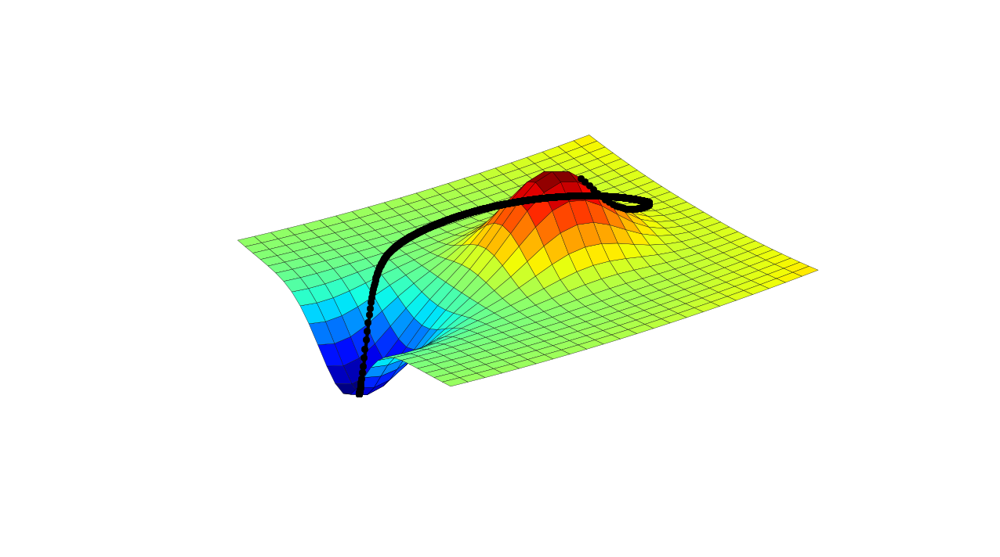

Wir ziehen eine Gerade durch die Daten.
Wie könnten wir so eine Gerade beschreiben?
Abstand zum Ursprung definiert als $- \frac {w_0} {|w|^2} $.
Wenn Punkt $x_p$ auf der Geraden dann
$w^T x_p + w_0 = 0$
Abstand eines Punktes $x$ von der Geraden ist
$\frac {w^T x + w_0} {|w|}$
Man könnte also sagen $w^T x + w_0$ ist so etwas wie der Abstand von $x$ zu der Geraden relativ zur Länge von $w$
Beispiel: Wähle $w$ und $w_0$ so, dass mindestens ein Punkt der einen Klasse auf der einen und mindestens ein Punkt der anderen Klasse auf der anderen Seite liegt.
Lege die Gerade so, dass möglichst wenige Punkte falsch klassifiziert werden.
Lege die Gerade so, dass ein möglichst breiter Saum die Gerade von den Punkten trennt.
...schließlich wollen wir einen Algorithmus!
Möglichst wenige Punkte falsch klassifizieren.
$E(w,w_0)=...$
Möglichst breiter Rand um die Gerade.
$E(w,w_0)=...$
Wir wissen, wie man das Minimum von einfachen Funktionen berechnet.
Aber wie können wir solche "komplizierten" Kostenfunktionen minimieren?
Es kommt drauf an!
Was tun, um das Minimum dieser Funktion zu finden?
Einen beliebigen Punkt wählen und die Richtung bestimmen wo es am steilsten bergab geht (Negation vom Gradienten).
Einen Schritt in diese Richtung tun und erneut die Richtung bestimmen.
$x^{(\text{neu})} = x^{(\text{alt})} - \alpha \nabla f(x^{(\text{alt})})$
Diesen Prozess wiederholen.
$x^{(\text{neu})} = x^{(\text{alt})} - \alpha \nabla f(x^{(\text{alt})})$
Diesen Prozess wiederholen.
$x^{(\text{neu})} = x^{(\text{alt})} - \alpha \nabla f(x^{(\text{alt})})$
Diesen Prozess wiederholen.
$x^{(\text{neu})} = x^{(\text{alt})} - \alpha \nabla f(x^{(\text{alt})})$
Die Prozedur in mehreren Dimensionen
Gegeben:
Wie könnten wir die Klassifizierung mit einem Linearen Classifier interpretieren als $P(C = c | X=x, \theta )$?
Wir stellen eine Funktion auf die beschreibt wie viele Fehler das Perceptron macht.
Dann finden wir die Kantengewichte die diese Funktion minimiert!
$E(w) = \sum_i \text{sign}(w^T x_i) - t_i$
Fällt etwas auf?
$a_j = \sum_i w_ij x_i + w_{j0}$
$z_j = h(a_j)$
$o_k = \sum_j v_{jk} z_j + v_{k0}$
$y_k = h(o_k)$
Flexibler...
...leider auch schwieriger zu trainieren, wir müssen $w$ und $v$ bestimmen.
$E(v,w) = \sum_n (y(x_n,w,v) - t_n)^2$
Eine Lernmethode für Neuronale Netzwerken mit mehreren Ebenen.
Wir wollen die folgende funktion mit gradient descent minimieren:
$E(v,w) = \sum_n (y(x_n,w,v) - t_n)^2$
Äquivalent: $E(v,w) = \frac 1 2 \sum_n (y(x_n,w,v) - t_n)^2$
Dafür brauchen wir den Gradienten der Funktion:
$\nabla E(v,w)$
Das Problem reduziert sich:
$\frac d {dv_{jk}} E(v,w) = \frac 1 2 \sum_n \frac d {dv_{jk}} (y(x_n,w,v) - t_n)^2$
Wir können auf jeden Datenpunkt einzeln gucken
(Ableitung einer Summe!)
$\frac d {dv_{jk}} E_n(v,w) = (y(x_n,w,v) - t_n)(\frac d {dv_{jk}} y(x_n,w,v))$
$\frac d {dv_{jk}} E_n(v,w) = (y(x_n,w,v) - t_n)(\frac d {dv_{jk}} y(x_n,w,v))$
$\frac d {dv_{jk}} y(x_n,w,v) = \frac d {dv_{jk}} h(\sum_j v_{jk} z_j + v_{k0})$
$= h^{\prime}(\sum_j v_{jk} z_j + v_{k0})z_j$